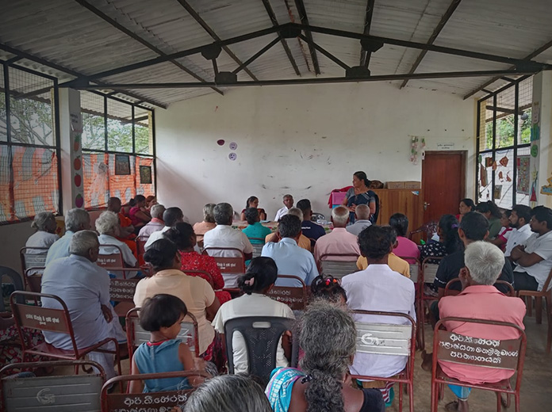
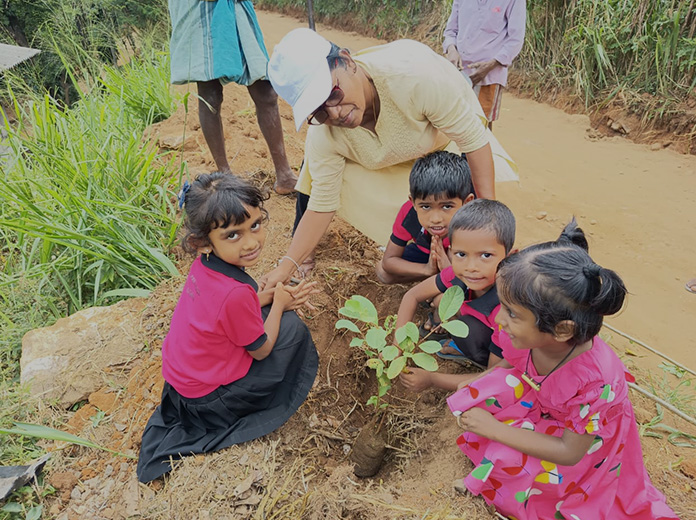
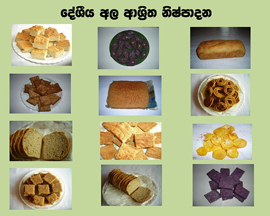

SUSTAINABLE COMMUNITY IMPACT
Empowering communities for sustainable futures
Training, leadership, and local action for lasting change
Explore ProjectsLoading…
Training, leadership, and local action for lasting change
Explore ProjectsSupporting farmers with skills, seeds, and market access
Visit Model FarmsWomen driving change in conservation and livelihoods
Get InvolvedWhat makes our work meaningful

Bringing people together to share knowledge, discuss challenges, and learn from each other as a community
Read more
Hands-on programs where communities learn simple, practical solutions for everyday needs and livelihoods
Read more
Working together to protect the environment through tree planting, conservation, and local initiatives
Read moreCommunity development
From small farms to village homes, we stand with people as they build better futures—through skills, support, and a deep connection to their land and community.


OUR KEY FOCUS AREAS
From small farms to family livelihoods, our work brings people, skills, and nature together to create lasting change.

Helping women build confidence, earn an income, and create better futures for their families

Supporting farmers to grow healthy food while caring for the land they depend on

Protecting traditional yam varieties and keeping local food knowledge alive for future generations

LOCAL FOOD & LIVELIHOODS
We work with communities to grow, protect, and share local food—from indigenous yams to traditional crops—turning knowledge into income and preserving food heritage for future generations.
ECO TOURISM
Our eco-tourism initiatives connect visitors with rural communities, traditional farming, and natural landscapes—offering meaningful experiences that support both people and the environment.


Featured impact
Behind every program is a person, a family, a turning point. These are stories of how lives begin to change when opportunity meets support.

Women’s livelihood
After joining our training program, she started with a small idea. Today she earns her own income and helps other women in her village do the same.
Make a difference
Whether you give, volunteer, or collaborate — every contribution helps communities grow stronger and more resilient.
Your gift funds training, tools, and resources that help families build lasting livelihoods from the ground up.
Give nowBring your skills to the field. We welcome educators, agronomists, and passionate community builders.
Get involvedOrganisations and institutions can scale our reach through strategic programs and long-term partnerships.
Let's talk